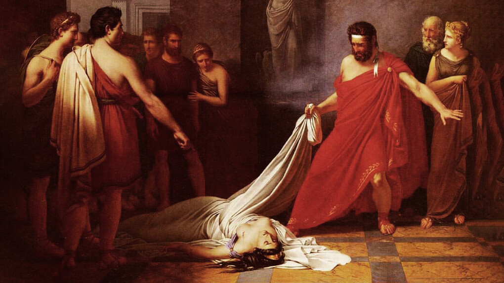
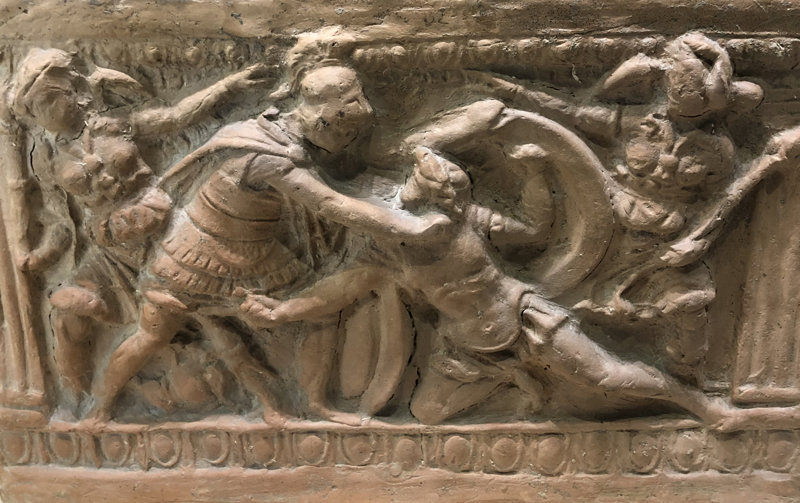

¿Quién fue Electra?
Electra es una figura destacada de la mitología griega, hija de Agamenón, rey de Micenas, y Clitemnestra, su esposa. Es parte de la infame familia de los Atridas, marcada por una cadena de crímenes familiares, traiciones y venganzas que inspiraron a los grandes dramaturgos de la tragedia griega clásica. Su historia ha sido contada en obras de Esquilo (Las Coéforas), Sófocles (Electra) y Eurípides (Electra), cada una con matices únicos, pero centradas en su papel fundamental dentro de la saga de venganza tras la Guerra de Troya.
¿Qué hizo?
Después del asesinato de Agamenón por parte de Clitemnestra y su amante Egisto, Electra queda profundamente traumatizada y dominada por el deseo de justicia (o venganza). Ella vive en una constante tensión moral, dividida entre el amor filial hacia su madre y la necesidad de vengar la muerte de su padre. Cuando su hermano Orestes regresa del exilio, Electra lo alienta y colabora en el asesinato de su madre y de Egisto. Este acto de matricidio tiene consecuencias terribles para ambos hermanos, perseguidos por las Erinias (divinidades de la venganza) y por su propia culpa.
¿Por qué es relevante?
Electra encarna la lucha interna entre la justicia y la moralidad personal. Representa el conflicto entre el deber familiar, la lealtad y el deseo de reparación del daño sufrido. Su figura ha trascendido la tragedia griega para ser objeto de análisis psicológico en tiempos modernos, especialmente a través del "complejo de Electra", un concepto acuñado por Carl Gustav Jung, que describe el apego emocional entre hija y padre como contrapartida al complejo de Edipo.
Lugar asociado: Micenas
Micenas fue una poderosa ciudad-estado del periodo micénico, en el Peloponeso, que jugó un rol importante en la mitología y la historia antigua de Grecia. Electra y su familia reinaron en esta ciudad, y gran parte del drama se desarrolla en su palacio real.